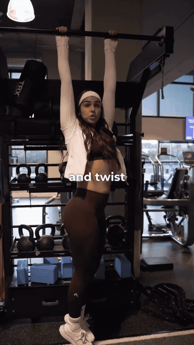
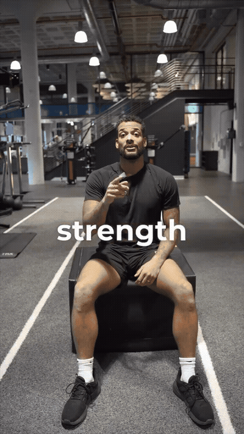
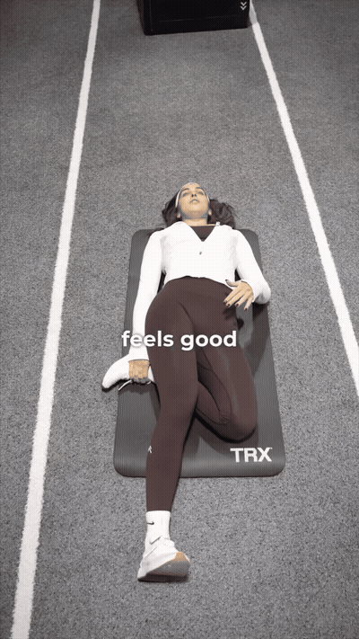

Hanging takes the load off the spine and lets the shoulders and ribcage lengthen. Adding a slow twist through the hips and legs takes the same hang into rotation — that's the part a stiff back actually feels.

Sitting pins the pelvis, so the bend has to come from the ribcage and mid-back — exactly where a desk day parks its stiffness. Crossed arms stop the shoulders from cheating the range.

Lying down takes gravity and the low-back muscles out of it, so the rotation is driven by your hands and hips instead of a spine that's busy holding you upright. The opposite leg stays straight to anchor the pelvis.